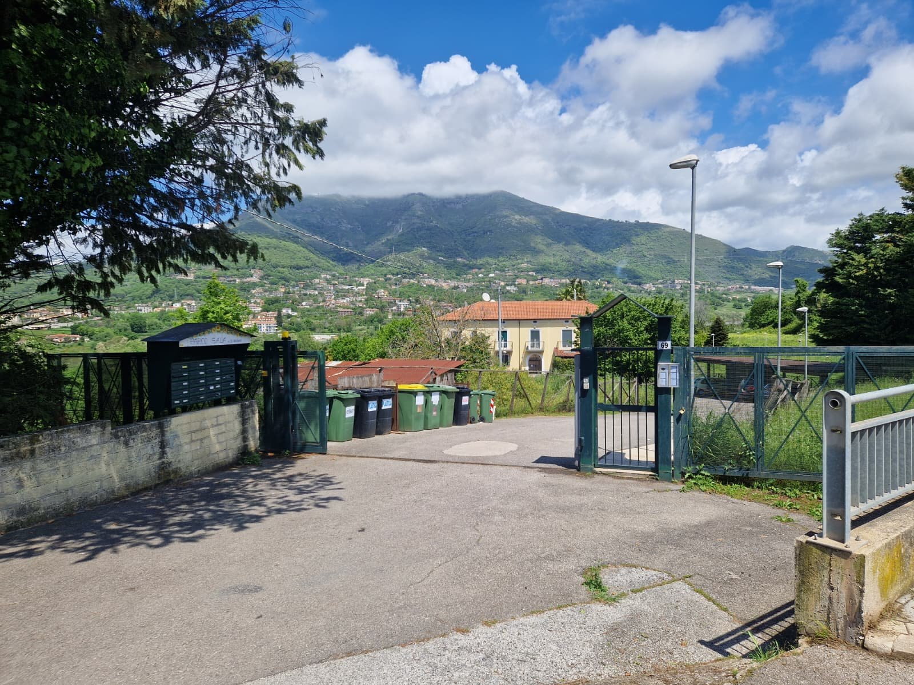
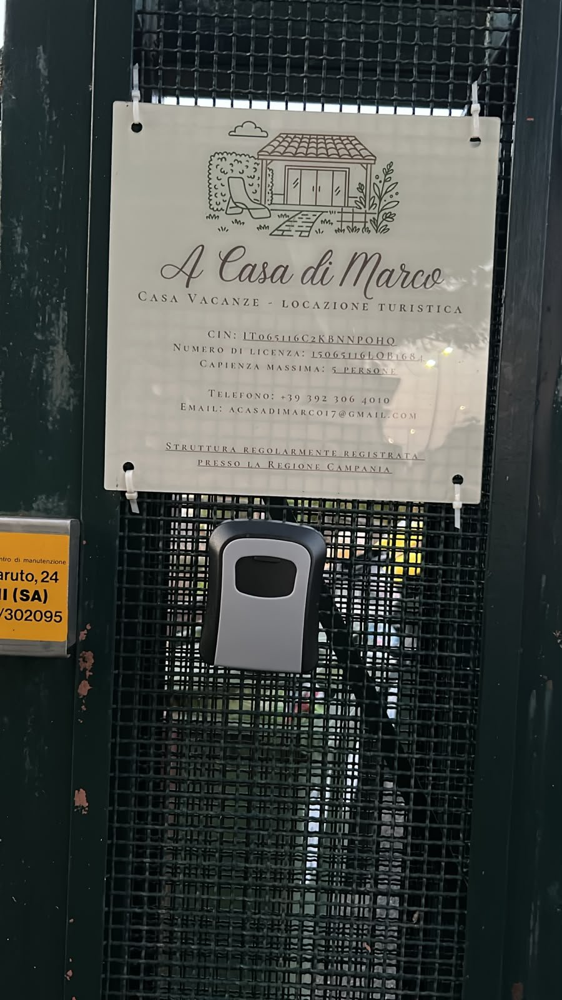
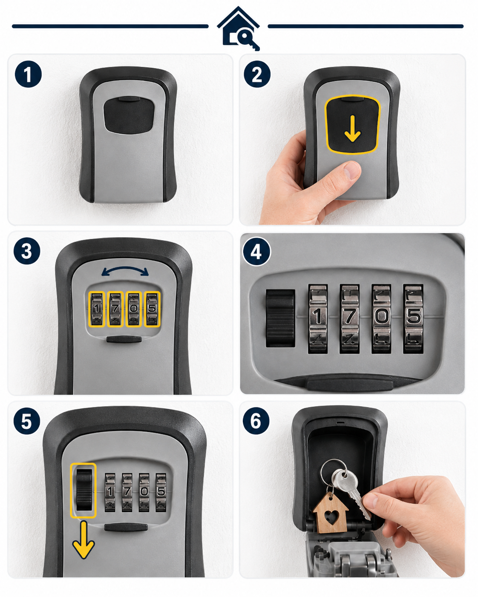
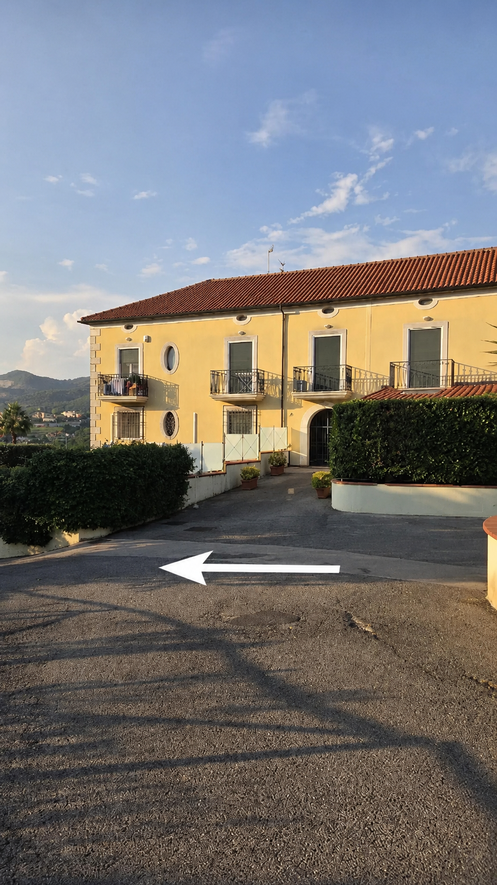
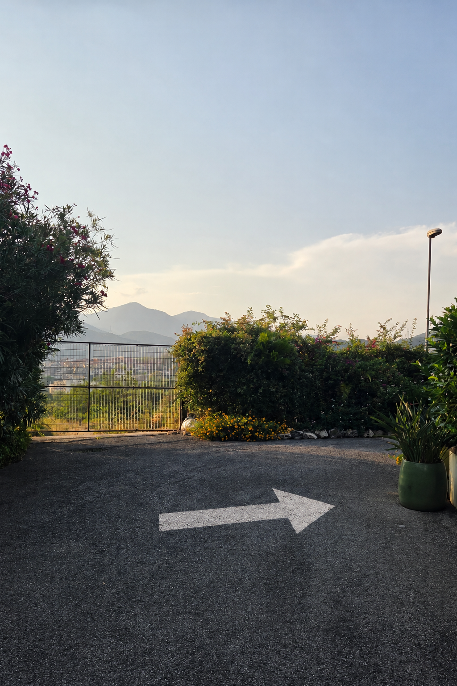
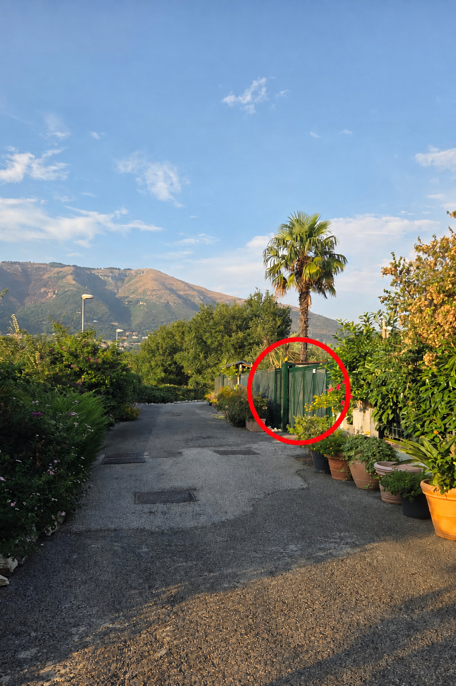
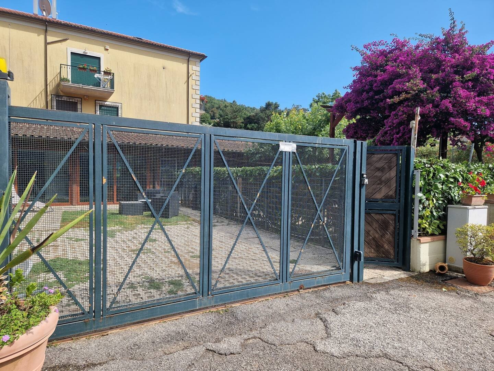
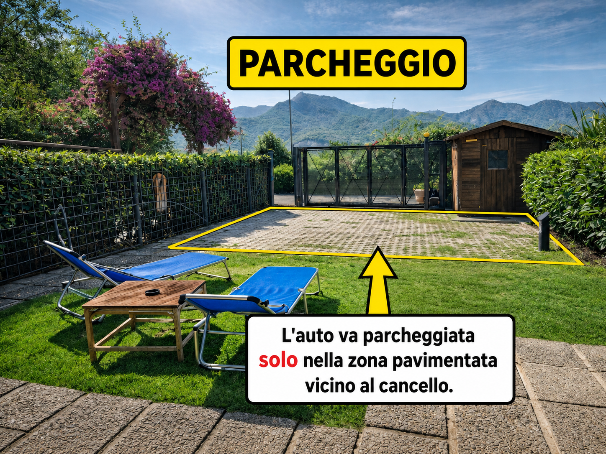
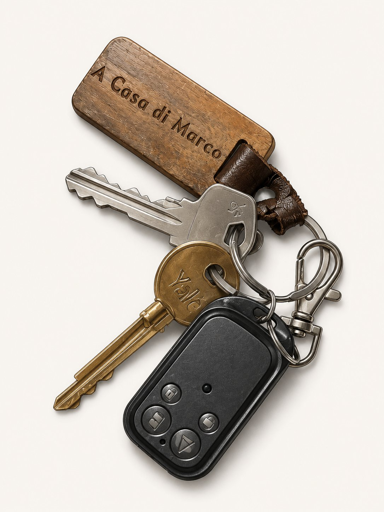
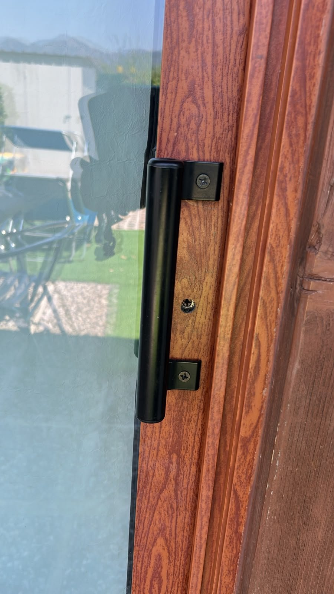

🛂 Check-in
Prima di arrivare
- Comunicateci in anticipo l'orario di arrivo previsto, così possiamo organizzarci per accogliervi.
- Inviateci un messaggio circa 30 minuti prima del vostro arrivo, così saremo pronti ad accogliervi al cancello.

🚪 Qui davanti al cancello 📬 Cassetta "A Casa di Marco"Al check-in
- Ci incontreremo davanti al cancello della struttura.
- Verranno richiesti i documenti di identità di tutti gli ospiti, inclusi i bambini.
- Dovrà essere pagata la tassa di soggiorno: 3 euro a persona al giorno, esclusi i bambini sotto gli 11 anni.
- Per prenotazioni Booking verrà richiesto un deposito cauzionale di 100 euro, restituito tramite bonifico entro 48 ore dal check-out.
- Pagamenti accettati: bonifico immediato, PayPal o contanti. Non abbiamo il POS.
Self check-in
📍 Raggiungi la casa su Google MapsRitira le chiavi
- Arrivati davanti al cancello principale, se avete completato la procedura di check-in online, trovate la KeyBox attaccata al cancello sotto il cartello della struttura (codice 1705), come mostrato in foto.

🔐 Istruzioni KeyBox

- Trova la KeyBox: è attaccata al cancello principale sotto il cartello della struttura, come mostrato nella foto sopra.
- Apri lo sportellino di protezione: fai scorrere verso il basso lo sportellino nero grande posto nella parte superiore della KeyBox.
- Ruota le quattro rotelle numeriche.
- Inserisci il codice 1705.
- Apri la KeyBox: dopo aver inserito il codice, spingi verso il basso la levetta nera situata a sinistra delle rotelle numeriche.
- Prendi le chiavi: apri lo sportello della KeyBox e preleva le chiavi all’interno.
Dopo aver preso le chiavi, richiudi correttamente lo sportello della KeyBox. Per sicurezza, sposta le rotelle in modo che il codice non rimanga visibile.
Apri il cancello condominiale
- Con il pulsante B del telecomando potete aprire il cancello condominiale in autonomia.
- Dopo la discesa, al bivio andate a sinistra.

Alla fine della strada, a destra
- Alla fine della strada voltate a destra.

Trova il cancello della casa
- La casa è il primo cancello sulla destra.

Apri il cancello della casa
- Per aprire il cancello della casa, premete il tasto A del telecomando attaccato alle chiavi.

Parcheggia nel giardino
- Parcheggiate l’auto all’interno del giardino nella zona pavimentata, facendo attenzione a non superare il giardino.

Entra in casa
🔑 Istruzioni uso chiavi e telecomando

Importante: durante il soggiorno custodite con cura le chiavi e il telecomando. In caso di smarrimento potrebbe essere applicata una penale.
Telecomando dei cancelli
- Tasto A: apre il cancello della casa, quello che permette di accedere al giardino.
- Tasto B: apre il cancello condominiale.
- Tasti C e D: non hanno nessuna funzionalità per la casa.
Chiave lunga
- La chiave lunga apre la porta della veranda, cioè la porta d’ingresso della casa.
- Per aprire correttamente la porta, inserite la chiave con la parte dritta con lo scalino rivolta verso l’alto e girate verso sinistra.

Altra chiave
- L’altra chiave apre il cancelletto vicino al cancello del giardino.
Lasciate le chiavi nella cassetta delle lettere “A Casa di Marco”, fuori dal cancello condominiale, in alto a destra. È la cassetta dove si riceve la posta: NON è la KeyBox da cui avete ritirato le chiavi.
🧹 Check-out
Check-out entro le10:00
Salvo diversi accordi. Le chiavi vanno nella cassetta delle lettere “A Casa di Marco”, quella della posta, non nella KeyBox.
📬 Cassetta in alto a destra
- Il check-out deve essere effettuato entro le ore 10:00, salvo diversi accordi.
- Tolleranza di 15 minuti: dal 16° minuto di ritardo non concordato si applicano i primi 20 € della prima ora, trattenuti dal deposito cauzionale.
- Controllate che siano spenti luci, rubinetti, condizionatore e termosifoni.
- Se possibile, lasciare gli asciugamani utilizzati nella cesta dei panni sporchi.
- Prima del check-out, portate i rifiuti negli appositi bidoni condominiali, rispettando la raccolta differenziata e le indicazioni di conferimento. Non lasciateli nei bidoni in casa o in quelli del giardino. Se non riuscite a portarli nei bidoni condominiali, assicuratevi almeno che siano correttamente separati e avvisate l’host. In caso di raccolta differenziata non rispettata, sarà applicata la penale prevista dalle regole della casa per il corretto smaltimento, fino a 50 €, con trattenuta dal deposito cauzionale. A Salerno il conferimento non conforme alle regole può comportare sanzioni comunali.
- Lasciate le chiavi nella cassetta delle lettere “A Casa di Marco”, fuori dal cancello condominiale, in alto a destra. È la cassetta dove si riceve la posta: NON è la KeyBox da cui avete ritirato le chiavi.
- Inviateci un messaggio per confermare il check-out.
Checklist prima di partire
Spuntate ogni punto prima di uscire: così siete sicuri di non dimenticare nulla.
Grazie! Questa piccola attenzione ci aiuta a preparare la casa al meglio per gli ospiti successivi.